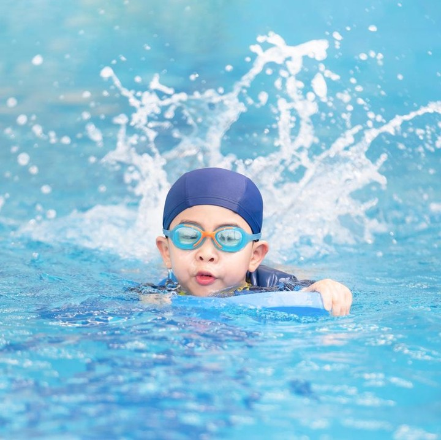

Tentang Saya
Nama saya Kayla, saya bersekolah di SMK Negeri 9 dengan jurusan Rekayasa Perangkat Lunak (RPL). Di jurusan ini, saya belajar banyak tentang pemrograman, desain aplikasi, dan pengembangan perangkat lunak. Saya diajarkan berbagai bahasa pemrograman seperti Java, C++, dan Python untuk membuat aplikasi dan website. Selain itu, saya juga belajar tentang sistem komputer dan cara kerjanya. Di SMK, saya berkesempatan mengikuti proyek praktikum yang mengasah keterampilan saya dalam membuat aplikasi yang fungsional. Saya berharap dengan keterampilan yang saya pelajari di RPL, saya bisa bekerja di industri teknologi atau bahkan membuka bisnis teknologi sendiri.
Renang
Renang adalah hobi yang sangat menyenangkan dan menyehatkan. Selain dapat memberikan kesenangan, aktivitas ini juga bermanfaat untuk kebugaran tubuh. Renang melibatkan hampir semua kelompok otot, mulai dari tangan, kaki, hingga otot inti. Aktivitas ini dapat meningkatkan kekuatan jantung dan paru-paru serta meningkatkan fleksibilitas tubuh. Selain itu, berenang dapat membantu mengurangi stres dan meningkatkan mood, karena air memiliki efek menenangkan. Banyak orang yang juga memilih renang sebagai bentuk latihan fisik karena dampaknya yang minimal terhadap persendian, menjadikannya cocok bagi orang dengan cedera atau masalah mobilitas.
Pelajaran Favorit
Mata pelajaran Bahasa Indonesia adalah salah satu yang paling saya sukai. Pelajaran ini tidak hanya mengajarkan keterampilan berbahasa, tetapi juga memperkenalkan berbagai karya sastra yang penuh makna. Saya menikmati membaca cerita pendek, puisi, dan novel yang menceritakan kehidupan dan perjuangan. Selain itu, Bahasa Indonesia mengajarkan cara menyampaikan pendapat secara jelas dan tepat, baik secara lisan maupun tulisan. Saya merasa pelajaran ini membantu saya lebih peka terhadap bahasa, serta meningkatkan kemampuan komunikasi. Selain itu, belajar tentang tata bahasa dan ejaan juga sangat penting untuk memahami dan menyampaikan pesan dengan benar dalam kehidupan sehari-hari.
Pengalaman
Pengalaman saya sebagai anak SMK sangat berharga. Di sekolah, saya tidak hanya belajar teori, tetapi juga banyak praktik yang langsung diterapkan di dunia kerja. Sebagai siswa jurusan Rekayasa Perangkat Lunak, saya menguasai berbagai bahasa pemrograman dan mengerjakan proyek-proyek perangkat lunak. Selain itu, saya juga terlibat dalam kegiatan ekstrakurikuler seperti OSIS dan Pramuka yang membantu saya mengembangkan keterampilan kepemimpinan dan kerjasama tim. Pengalaman magang di perusahaan juga memberikan wawasan langsung tentang dunia industri. Semua pengalaman ini membentuk saya menjadi pribadi yang lebih siap menghadapi tantangan di dunia kerja setelah lulus nanti.